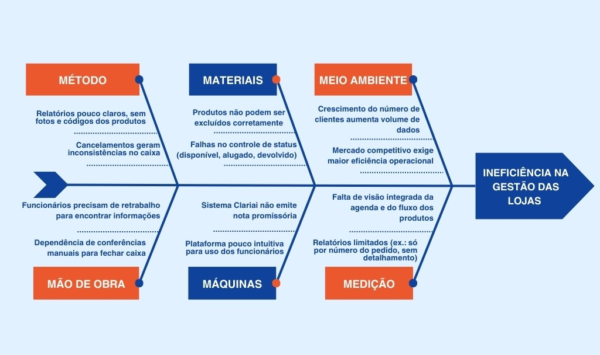

1. CENÁRIO ATUAL DO CLIENTE E DO NEGÓCIO
1.1 Introdução ao Negócio e Contexto
A Closet Chic Compartilhado é uma loja de moda especializada em aluguel de roupas femininas, onde o foco principal são vestidos de festa e acessórios femininos. A empresa tem se consolidado no mercado há três anos. A empresa está passando por uma expansão, uma nova loja, a Leoni, que tem maior foco no aluguel de ternos e acessórios masculinos, oferecendo soluções para atender eventos sociais e formais.
1.2 Identificação da Oportunidade ou Problema
Devido ao crescimento da loja, a necessidade de acabar com os problemas principais do software atual surgiram, a "Clariai", solução atual de software da empresa, tornou-se um gargalo operacional, incapaz de suportar o volume de uma única marca, e muito menos a complexidade de duas. Essa limitação tecnológica representa hoje o principal obstáculo para a expansão e o sucesso contínuo do negócio.
As falhas do sistema se manifestam diariamente e em múltiplas frentes. A ausência de um controle de status confiável do inventário (disponível, alugado, devolvido) gera inconsistências e arrisca a confiança do cliente. A equipe é forçada a um ciclo de retrabalho e conferências manuais, operando em uma plataforma pouco intuitiva e com relatórios limitados que impedem qualquer análise estratégica. Esses fatores acumulados criam uma operação lenta, propensa a erros e desalinhada com a agilidade que o mercado exige.
O resultado é um cenário em que a empresa, mesmo em plena expansão, não consegue atender à demanda com eficiência. Essa condição compromete a experiência de compra, gera insegurança no fechamento de caixa e, mais criticamente, ameaça o lançamento bem-sucedido da Leonni. A criação de um novo sistema próprio surge, portanto, não apenas como uma solução para os problemas atuais, mas como um passo estratégico fundamental para unificar as marcas, garantir a escalabilidade e transformar uma fraqueza operacional em um diferencial competitivo.
A Figura, a seguir, apresenta o diagrama de Ishikawa contendo as causas do problema

1.3 Desafios do Projeto
O projeto enfrenta alguns desafios importantes:
- Transição de sistema: substituir o software atual sem prejudicar o funcionamento da loja durante o período de adaptação.
- Atender duas lojas diferentes: garantir que Closet Chic e Leonni possam trabalhar dentro da mesma plataforma, mas com identidades diferentes em seus cadastros e relatórios.
- Facilidade de uso: criar uma solução simples e intuitiva para que funcionários consigam utilizá-la no dia a dia, mesmo com diferentes níveis de familiaridade com tecnologia.
1.4 Segmentação de Clientes
O Leoni Hub atende a principalmente 3 tipos de clientes
- Transição de sistema: substituir o software atual sem prejudicar o funcionamento da loja durante o período de adaptação.
- Atender duas lojas diferentes: garantir que Closet Chic e Leonni possam trabalhar dentro da mesma plataforma, mas com identidades diferentes em seus cadastros e relatórios.
- Facilidade de uso: criar uma solução simples e intuitiva para que funcionários consigam utilizá-la no dia a dia, mesmo com diferentes níveis de familiaridade com tecnologia.